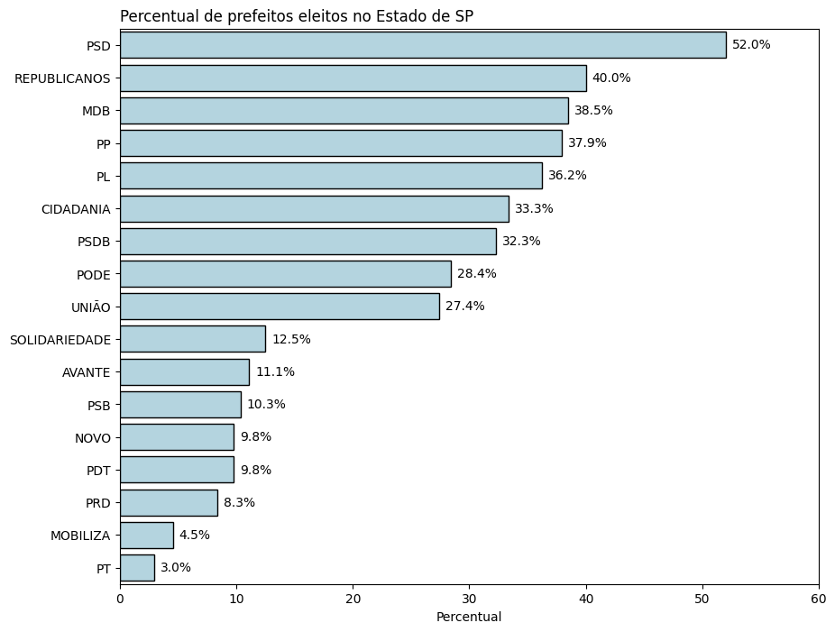
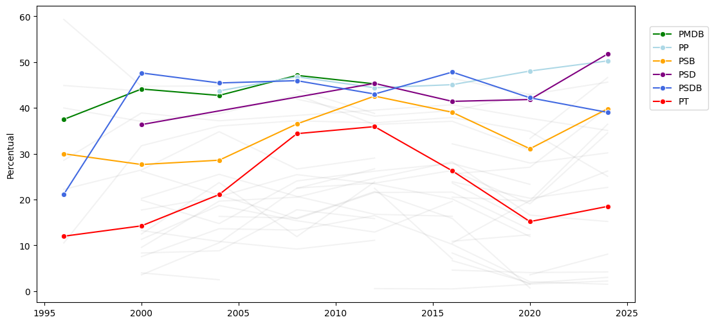

import pandas as pd
import numpy as np
import basedosdados as bd
import seaborn as sns
import matplotlib.pyplot as plotResultados Eleitorais (1996-2024)
1. Business Undestanding
Objetivo: Investigar o percentual de prefeitos eleitos por cada partido desde 1996 até 2024.
2. Data Undestanding
Coleta dos Dados
Bibliotecas
Importação
query = '''
SELECT * FROM `basedosdados.br_tse_eleicoes.resultados_candidato_municipio`
WHERE cargo = 'prefeito' OR cargo = 'governador'
'''
df = bd.read_sql(
query = query,
billing_project_id="resultado-eleicoes-br"
)Downloading: 100%|██████████|Descrição dos Dados
Colunas
df.info()<class 'pandas.core.frame.DataFrame'>
RangeIndex: 443830 entries, 0 to 443829
Data columns (total 16 columns):
# Column Non-Null Count Dtype
--- ------ -------------- -----
0 ano 443830 non-null Int64
1 turno 443830 non-null Int64
2 id_eleicao 443830 non-null object
3 tipo_eleicao 443830 non-null object
4 data_eleicao 443830 non-null dbdate
5 sigla_uf 443830 non-null object
6 id_municipio 443824 non-null object
7 id_municipio_tse 443830 non-null object
8 cargo 443830 non-null object
9 numero_partido 443830 non-null object
10 sigla_partido 443830 non-null object
11 titulo_eleitoral_candidato 436428 non-null object
12 sequencial_candidato 443829 non-null object
13 numero_candidato 443830 non-null object
14 resultado 443814 non-null object
15 votos 443830 non-null Int64
dtypes: Int64(3), dbdate(1), object(12)
memory usage: 55.4+ MBVariáveis Contínuas
df.describe()| ano | turno | votos | |
|---|---|---|---|
| count | 443830.0 | 443830.0 | 443830.0 |
| mean | 2010.095843 | 1.088825 | 4122.084875 |
| std | 8.767365 | 0.284491 | 35920.08178 |
| min | 1994.0 | 1.0 | 0.0 |
| 25% | 2002.0 | 1.0 | 12.0 |
| 50% | 2010.0 | 1.0 | 562.0 |
| 75% | 2018.0 | 1.0 | 2497.0 |
| max | 2024.0 | 2.0 | 3885416.0 |
Variáveis Categóricas
df.describe(include='object')| id_eleicao | tipo_eleicao | sigla_uf | id_municipio | id_municipio_tse | cargo | numero_partido | sigla_partido | titulo_eleitoral_candidato | sequencial_candidato | numero_candidato | resultado | |
|---|---|---|---|---|---|---|---|---|---|---|---|---|
| count | 443830 | 443830 | 443830 | 443824 | 443830 | 443830 | 443830 | 443830 | 436428 | 443829 | 443830 | 443814 |
| unique | 484 | 446 | 27 | 5570 | 5572 | 2 | 40 | 56 | 69460 | 77848 | 55 | 5 |
| top | 546 | eleicao ordinaria | SP | 3550308 | 71072 | governador | 15 | PT | 000087950655 | 10000 | 15 | nao eleito |
| freq | 48173 | 440352 | 71301 | 204 | 204 | 331979 | 52159 | 46006 | 2794 | 2539 | 47970 | 322479 |
Análise Exploratória dos Dados
ID de São Paulo (SP)
Vamos tentar encontrar o id do município de São Paulo (SP) por meio do resultado eleitoral de 2024. Sabemos que tivemos um segundo turno entre Ricardo Nunes (MDB) e Guilherme Boulos (PSOL). Com alguns filtros, podemos encontrar os resultados dessa disputa.
df[
(df['ano'] == 2024) &
(df['cargo'] == 'prefeito') &
(df['sigla_uf'] == 'SP') &
((df['numero_candidato'] == "15") | (df['numero_candidato'] == "50")) &
(df['turno'] == 2) &
(df['votos'] > 1000000)
].sort_values(by='id_municipio')| ano | turno | id_eleicao | tipo_eleicao | data_eleicao | sigla_uf | id_municipio | id_municipio_tse | cargo | numero_partido | sigla_partido | titulo_eleitoral_candidato | sequencial_candidato | numero_candidato | resultado | votos | |
|---|---|---|---|---|---|---|---|---|---|---|---|---|---|---|---|---|
| 433682 | 2024 | 2 | 620 | eleicao ordinaria | 2024-10-27 | SP | 3550308 | 71072 | prefeito | 15 | MDB | 113912050167 | 250002098117 | 15 | eleito | 3393110 |
| 440023 | 2024 | 2 | 620 | eleicao ordinaria | 2024-10-27 | SP | 3550308 | 71072 | prefeito | 50 | PSOL | 195710880167 | 250001926547 | 50 | nao eleito | 2323901 |
Voilà! O id (IBGE) do município de São Paulo (SP) é “3550308”. Vamos salvá-lo em uma variável.
id_muni_sp = "3550308"Vamos, agora, analisar os resultados para as eleições de 2024 em São Paulo (SP).
muni_sp_2024 = df[
(df['id_municipio'] == id_muni_sp) & (df['ano'] == 2024)
].sort_values(by='turno')
muni_sp_2024| ano | turno | id_eleicao | tipo_eleicao | data_eleicao | sigla_uf | id_municipio | id_municipio_tse | cargo | numero_partido | sigla_partido | titulo_eleitoral_candidato | sequencial_candidato | numero_candidato | resultado | votos | |
|---|---|---|---|---|---|---|---|---|---|---|---|---|---|---|---|---|
| 433681 | 2024 | 1 | 619 | eleicao ordinaria | 2024-10-06 | SP | 3550308 | 71072 | prefeito | 15 | MDB | 113912050167 | 250002098117 | 15 | 2º turno | 1801139 |
| 433832 | 2024 | 1 | 619 | eleicao ordinaria | 2024-10-06 | SP | 3550308 | 71072 | prefeito | 16 | PSTU | 227870560159 | 250002078851 | 16 | nao eleito | 3017 |
| 436404 | 2024 | 1 | 619 | eleicao ordinaria | 2024-10-06 | SP | 3550308 | 71072 | prefeito | 27 | DC | 095285460167 | 250002355541 | 27 | nao eleito | 833 |
| 436463 | 2024 | 1 | 619 | eleicao ordinaria | 2024-10-06 | SP | 3550308 | 71072 | prefeito | 28 | PRTB | 049143831023 | 250001978066 | 28 | nao eleito | 1719274 |
| 436703 | 2024 | 1 | 619 | eleicao ordinaria | 2024-10-06 | SP | 3550308 | 71072 | prefeito | 30 | NOVO | 014749662011 | 250001884312 | 30 | nao eleito | 84212 |
| 436508 | 2024 | 1 | 619 | eleicao ordinaria | 2024-10-06 | SP | 3550308 | 71072 | prefeito | 29 | PCO | 430484530141 | 250002362195 | 29 | nao eleito | 960 |
| 437750 | 2024 | 1 | 619 | eleicao ordinaria | 2024-10-06 | SP | 3550308 | 71072 | prefeito | 40 | PSB | 392700900159 | 250002163891 | 40 | nao eleito | 605552 |
| 439819 | 2024 | 1 | 619 | eleicao ordinaria | 2024-10-06 | SP | 3550308 | 71072 | prefeito | 45 | PSDB | 126230350183 | 250002180213 | 45 | nao eleito | 112344 |
| 442514 | 2024 | 1 | 619 | eleicao ordinaria | 2024-10-06 | SP | 3550308 | 71072 | prefeito | 80 | UP | 338181630167 | 250002031025 | 80 | nao eleito | 5593 |
| 440022 | 2024 | 1 | 619 | eleicao ordinaria | 2024-10-06 | SP | 3550308 | 71072 | prefeito | 50 | PSOL | 195710880167 | 250001926547 | 50 | 2º turno | 1776127 |
| 433682 | 2024 | 2 | 620 | eleicao ordinaria | 2024-10-27 | SP | 3550308 | 71072 | prefeito | 15 | MDB | 113912050167 | 250002098117 | 15 | eleito | 3393110 |
| 440023 | 2024 | 2 | 620 | eleicao ordinaria | 2024-10-27 | SP | 3550308 | 71072 | prefeito | 50 | PSOL | 195710880167 | 250001926547 | 50 | nao eleito | 2323901 |
Vamos ver o resultado eleitoral por partido.
muni_sp_2024.\
groupby(['sigla_partido', 'resultado']).\
size().\
reset_index(name='total')| sigla_partido | resultado | total | |
|---|---|---|---|
| 0 | DC | nao eleito | 1 |
| 1 | MDB | 2º turno | 1 |
| 2 | MDB | eleito | 1 |
| 3 | NOVO | nao eleito | 1 |
| 4 | PCO | nao eleito | 1 |
| 5 | PRTB | nao eleito | 1 |
| 6 | PSB | nao eleito | 1 |
| 7 | PSDB | nao eleito | 1 |
| 8 | PSOL | 2º turno | 1 |
| 9 | PSOL | nao eleito | 1 |
| 10 | PSTU | nao eleito | 1 |
| 11 | UP | nao eleito | 1 |
Os resultados acima mostram um possível problema para a nossa análise. Em cidades onde houve 2º turno, o mesmo partido se repete duas vezes: uma para o resultado do primeiro turno e outra para o resultado do segundo turno. Nosso propósito é ver o percentual de eleitos e não eleito por partido, então se tiver tido 2T, precisamos retirar as linhas dos dois candidatos cujo resultado é “2º Turno”.
muni_sp_2024 = muni_sp_2024[
muni_sp_2024['resultado'] != '2º turno'
]
muni_sp_2024.\
groupby(['sigla_partido', 'resultado']).\
size().\
reset_index(name='total')| sigla_partido | resultado | total | |
|---|---|---|---|
| 0 | DC | nao eleito | 1 |
| 1 | MDB | eleito | 1 |
| 2 | NOVO | nao eleito | 1 |
| 3 | PCO | nao eleito | 1 |
| 4 | PRTB | nao eleito | 1 |
| 5 | PSB | nao eleito | 1 |
| 6 | PSDB | nao eleito | 1 |
| 7 | PSOL | nao eleito | 1 |
| 8 | PSTU | nao eleito | 1 |
| 9 | UP | nao eleito | 1 |
Estado de São Paulo (2024)
Agora, sim! Vamos ver o percentual de eleitos e não eleitos no Estado de São Paulo.
# Filtra somente as eleições de 2024 em SP e retira os resultados de 2º turno para não
# poluir o percentual de eleitos x não eleitos
est_sp_2024 = df[
(df['ano'] == 2024) &
(df['sigla_uf'] == 'SP') &
(df['resultado'] != '2º turno')
]
# Agrupa o df por partido e cria uma coluna com o total de candidatos eleitos e não eleitos
est_sp_2024 = est_sp_2024.\
groupby(['sigla_partido', 'resultado']).\
size().\
reset_index(name='total')
# Cria coluna com o total de candidatos por partido
est_sp_2024['total_partido'] =est_sp_2024.\
groupby('sigla_partido')['total'].\
transform('sum')
# Cria coluna de percentual
est_sp_2024['percentual'] = (est_sp_2024['total'] / est_sp_2024['total_partido']) * 100
# Visualiza
est_sp_2024[est_sp_2024['resultado'] == 'eleito'].sort_values(by=['percentual'], ascending=False)| sigla_partido | resultado | total | total_partido | percentual | |
|---|---|---|---|---|---|
| 29 | PSD | eleito | 206 | 396 | 52.020202 |
| 39 | REPUBLICANOS | eleito | 82 | 205 | 40.000000 |
| 6 | MDB | eleito | 67 | 174 | 38.505747 |
| 22 | PP | eleito | 47 | 124 | 37.903226 |
| 17 | PL | eleito | 104 | 287 | 36.236934 |
| 3 | CIDADANIA | eleito | 5 | 15 | 33.333333 |
| 31 | PSDB | eleito | 21 | 65 | 32.307692 |
| 20 | PODE | eleito | 31 | 109 | 28.440367 |
| 43 | UNIÃO | eleito | 34 | 124 | 27.419355 |
| 41 | SOLIDARIEDADE | eleito | 4 | 32 | 12.500000 |
| 1 | AVANTE | eleito | 2 | 18 | 11.111111 |
| 27 | PSB | eleito | 9 | 87 | 10.344828 |
| 10 | NOVO | eleito | 4 | 41 | 9.756098 |
| 15 | PDT | eleito | 4 | 41 | 9.756098 |
| 24 | PRD | eleito | 2 | 24 | 8.333333 |
| 8 | MOBILIZA | eleito | 1 | 22 | 4.545455 |
| 35 | PT | eleito | 4 | 135 | 2.962963 |
maiores_perc = est_sp_2024[
est_sp_2024['resultado'] == 'eleito'
].\
sort_values(by=['percentual'], ascending=False)
maiores_perc = maiores_perc['sigla_partido'].values
maiores_percarray(['PSD', 'REPUBLICANOS', 'MDB', 'PP', 'PL', 'CIDADANIA', 'PSDB',
'PODE', 'UNIÃO', 'SOLIDARIEDADE', 'AVANTE', 'PSB', 'NOVO', 'PDT',
'PRD', 'MOBILIZA', 'PT'], dtype=object)plot.figure(figsize=(10, 8))
ax = sns.barplot(
data=est_sp_2024[est_sp_2024['resultado'] == 'eleito'],
y='sigla_partido',
x='percentual',
order=maiores_perc,
edgecolor='black',
color='lightblue'
)
plot.title('Percentual de prefeitos eleitos no Estado de SP', loc='left')
plot.ylabel('')
plot.xlabel('Percentual')
plot.xlim([0,60])
for container in ax.containers:
ax.bar_label(
container=container,
labels=[f'{val:.1f}%' for val in container.datavalues],
padding=5 # Ajusta o espaço entre o rótulo e a barra
)
Brasil (2024)
Agora vamos visualizar o percentual de prefeitos eleitos em 2024 por partido no Brasil inteiro!
brasil_2024 = df[
(df['ano'] == 2024) & (df['resultado'] != '2º turno')
]
brasil_2024 = brasil_2024.\
groupby(['sigla_partido', 'resultado']).\
size().\
reset_index(name='total')
brasil_2024['total_partido'] = brasil_2024.\
groupby('sigla_partido')['total'].\
transform('sum')
brasil_2024['percentual'] = (brasil_2024['total'] / brasil_2024['total_partido']) * 100
brasil_2024 = brasil_2024[brasil_2024['resultado'] == 'eleito']
# Visualiza
brasil_2024.sort_values(by='percentual', ascending=False)| sigla_partido | resultado | total | total_partido | percentual | |
|---|---|---|---|---|---|
| 34 | PSD | eleito | 884 | 1707 | 51.786760 |
| 26 | PP | eleito | 747 | 1486 | 50.269179 |
| 50 | UNIÃO | eleito | 583 | 1250 | 46.640000 |
| 8 | MDB | eleito | 855 | 1874 | 45.624333 |
| 46 | REPUBLICANOS | eleito | 432 | 1079 | 40.037071 |
| 32 | PSB | eleito | 309 | 776 | 39.819588 |
| 36 | PSDB | eleito | 274 | 702 | 39.031339 |
| 2 | AVANTE | eleito | 136 | 373 | 36.461126 |
| 20 | PL | eleito | 514 | 1465 | 35.085324 |
| 14 | PC do B | eleito | 19 | 55 | 34.545455 |
| 4 | CIDADANIA | eleito | 32 | 106 | 30.188679 |
| 24 | PODE | eleito | 127 | 484 | 26.239669 |
| 28 | PRD | eleito | 76 | 296 | 25.675676 |
| 18 | PDT | eleito | 151 | 602 | 25.083056 |
| 48 | SOLIDARIEDADE | eleito | 63 | 278 | 22.661871 |
| 40 | PT | eleito | 251 | 1356 | 18.510324 |
| 10 | MOBILIZA | eleito | 21 | 136 | 15.441176 |
| 42 | PV | eleito | 14 | 92 | 15.217391 |
| 12 | NOVO | eleito | 19 | 235 | 8.085106 |
| 44 | REDE | eleito | 4 | 95 | 4.210526 |
| 0 | AGIR | eleito | 3 | 78 | 3.846154 |
| 22 | PMB | eleito | 2 | 66 | 3.030303 |
| 6 | DC | eleito | 2 | 90 | 2.222222 |
| 30 | PRTB | eleito | 1 | 66 | 1.515152 |
A tabela acima mostra o percentual de prefeitos eleitos por partido para o ano de 2024.PSD, PP e União Brasil foram os partidos com as maiores taxas de aproveitamento.
Brasil (1996-2024)
Vamos ver agora o percentual de aproveitamento de cada partido ao longo de toda a série histórica disponível.
brasil_pref = df[
(df['cargo'] == 'prefeito') &
(df['resultado'] != '2º turno')
]
brasil_pref = brasil_pref.\
groupby(['sigla_partido', 'resultado', 'ano']).size().reset_index(name='total')
brasil_pref['total_partido'] = brasil_pref.\
groupby(['sigla_partido', 'ano'])['total'].transform('sum')
brasil_pref['percentual'] = (brasil_pref['total'] / brasil_pref['total_partido']) * 100
brasil_pref = brasil_pref[brasil_pref['resultado'] == 'eleito']brasil_pref.sort_values(by='percentual', ascending=False).head(20)| sigla_partido | resultado | ano | total | total_partido | percentual | |
|---|---|---|---|---|---|---|
| 98 | PFL | eleito | 1996 | 35 | 59 | 59.322034 |
| 282 | PSD | eleito | 2024 | 884 | 1707 | 51.786760 |
| 171 | PP | eleito | 2024 | 747 | 1486 | 50.269179 |
| 170 | PP | eleito | 2020 | 705 | 1467 | 48.057260 |
| 294 | PSDB | eleito | 2016 | 815 | 1704 | 47.828638 |
| 290 | PSDB | eleito | 2000 | 990 | 2078 | 47.641963 |
| 139 | PMDB | eleito | 2008 | 1232 | 2615 | 47.112811 |
| 167 | PP | eleito | 2008 | 563 | 1203 | 46.799667 |
| 446 | UNIÃO | eleito | 2024 | 583 | 1250 | 46.640000 |
| 28 | MDB | eleito | 2016 | 1074 | 2312 | 46.453287 |
| 292 | PSDB | eleito | 2008 | 807 | 1756 | 45.956720 |
| 30 | MDB | eleito | 2024 | 855 | 1874 | 45.624333 |
| 291 | PSDB | eleito | 2004 | 880 | 1936 | 45.454545 |
| 279 | PSD | eleito | 2012 | 504 | 1111 | 45.364536 |
| 140 | PMDB | eleito | 2012 | 1040 | 2298 | 45.256745 |
| 169 | PP | eleito | 2016 | 513 | 1138 | 45.079086 |
| 179 | PPB | eleito | 1996 | 22 | 49 | 44.897959 |
| 100 | PFL | eleito | 2004 | 794 | 1773 | 44.782854 |
| 99 | PFL | eleito | 2000 | 1035 | 2313 | 44.747082 |
| 168 | PP | eleito | 2012 | 485 | 1092 | 44.413919 |
plot.figure(figsize=(12,6))
partidos = ['PT', 'PSB', 'PSD', 'PSDB', 'PP', 'PMDB']
# Demais partidos
sns.lineplot(
data = brasil_pref[~brasil_pref['sigla_partido'].isin(partidos)],
x = 'ano',
y = 'percentual',
hue = 'sigla_partido',
legend=False,
palette=['gray'],
alpha=0.15
)
paleta = sns.color_palette(
palette=['green', 'lightblue', 'orange', 'purple', 'royalblue', 'red']
)
sns.lineplot(
data = brasil_pref[brasil_pref['sigla_partido'].isin(partidos)],
x = 'ano',
y = 'percentual',
hue = 'sigla_partido',
palette=paleta
)
plot.title(
'Brasil (1996-2024)\nPercentual de Prefeitos Eleitos por Partido',
loc='left'
)
plot.ylabel('Percentual (%)')
plot.xticks(ticks=range(1996, 2025, 4))
plot.xlim((1995, 2025))
plot.xlabel('')
plot.legend(loc=(1.025, 0.65))
plot.grid(True)